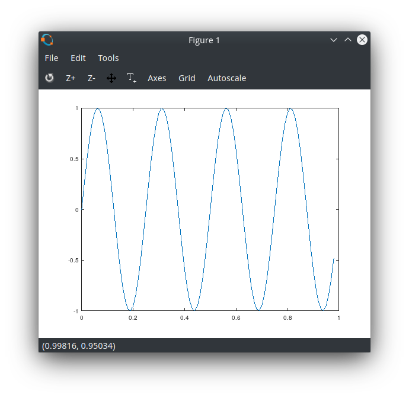
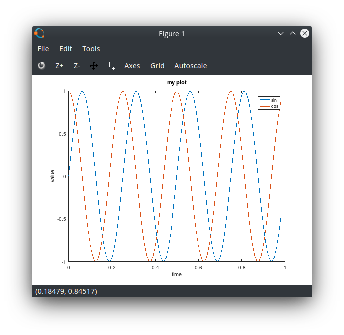
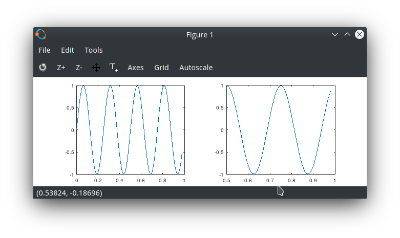
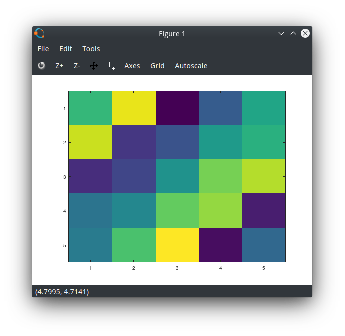
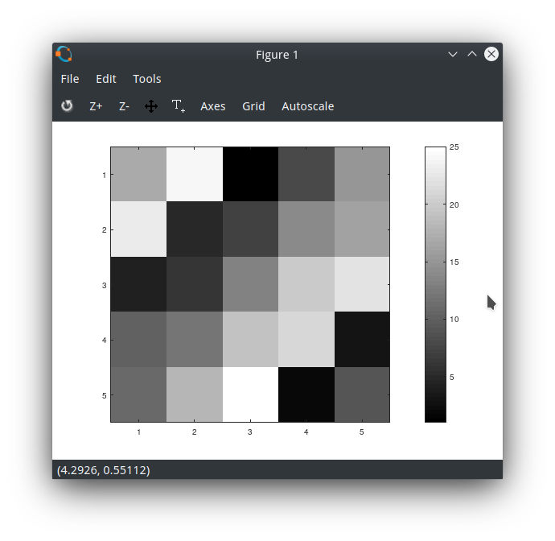

Octave为GNU项目下的开源软件,可以快速实现算法的一种原型语言。在线Web地址：
Octave is a free open source software under the GNU prject,which can rapidly implement algorithm.
Online version: octave-online
Installation on Archlinux：sudo pacman -S octave,enter the shell：octave,shows the following:
GNU Octave, version 5.1.0 |
Basic opeation
common variables
octave:5> 1+1 |
use PS1() to change the default prompt:octave:14> PS1('( つ•̀ω•́)つ ')
( つ•̀ω•́)つ A = [1,2,3;4,5,6;7,8,9]
A =
1 2 3
4 5 6
7 8 9
( つ•̀ω•́)つ PS1('>>')
>>
semicolon supress output>> a = 3
a = 3
>> a = 3;
>> a
a = 3
>> a;disp() is used to display,sprintf() is used to format string output:>>pi = 3.1415926;
>>disp(pi)
3.1416
>>disp(sprintf('pi is: %0.2f',pi))
pi is: 3.14format [long|short] is used to change the precision.
matrix and vector
A is a 3x2 matrix,x is a 3x1 vector,y is a 1x3 vector.ones() returns a matrix with all elements 1.zeros() returns a matrix with all elements 0.rand() returns a matrix with all elements random number.eye() returns a identity matrix.size() returns the size of the matrix.length() returns the larger dimension of the matrix,for vector it returns the length of it.A(x,y) returns the A[x][y] element.>>A = [1,2,3;4,5,6]
A =
1 2 3
4 5 6
>>A(1,3)
ans = 3
>>A(2,:) % means every element along that column/row
ans =
4 5 6
>>A(:,[1,2])
ans =
1 2
4 5
>>size(A)
ans =
2 3
>>x = [3;4;5]
x =
3
4
5
>>y = [1,2,3]
y =
1 2 3
>>v = 1:6
v =
1 2 3 4 5 6
>>v = [1 2 3 4]
v =
1 2 3 4
>>length(A)
ans = 3
>>length(v)
ans = 4
>>ones(2,3)
ans =
1 1 1
1 1 1
>>eye(3)
ans =
Diagonal Matrix
1 0 0
0 1 0
0 0 1
>>A = [A,[7;8]] % append a column to matrix
A =
1 2 3 7
4 5 6 8
>>A(:) % put all elements of A into a single vector
ans =
1
4
2
5
3
6
7
8
>>A = [A;[9,10,11,12]] % append a row to the matrix
A =
1 2 3 7
4 5 6 8
1 2 3 4
9 10 11 12
use hist() to plot a histogram>>w = randn(1,10000)
>>hist(w)
Data Persist
use help <cmd> to refer to the manual of cmd>>help eye
>>help rand
use pwd to get present working directory,use cd to change directory,ls to list the files:>>pwd
ans = /home/xuranus
>>cd ~/Desktop/
>>pwd
ans = /home/xuranus/Desktop
use who to list all the variable in current working space while whos list the detail. save(filename) can save all the data to the disk,when the second variable is speified like save('xxx',v),only the specified variable v will be persisted .clear can clear all the data,and then we use whoagain to check if there exists any variable(of course there doesn’t).By using load(filename) we can restore the variable we cleared from file.>>who
Variables in the current scope:
A a ans p pi v w x y
>>save('test1.dat')
>>ls
test.dat
>>clear
>>who
>>load('test1.dat')
>>whos
Variables in the current scope:
Attr Name Size Bytes Class
==== ==== ==== ===== =====
A 2x3 48 double
a 1x1 8 double
ans 1x21 21 char
p 3x1 24 double
pi 1x1 8 double
v 1x4 32 double
w 1x10000 80000 double
x 3x1 24 double
y 1x3 24 double
Total is 10042 elements using 80189 bytes
Computing On Data
. denotes element wise operation,which is different from common matrix arthmetic operation.pinv() returns the reverse of A.A' means transpose of matrix A.>>> A = [1 2; 3 4; 5 6]
A =
1 2
3 4
5 6
>>> B = [4 5 6;7 8 9]
B =
4 5 6
7 8 9
>>> A'
ans =
1 3 5
2 4 6
>>> A*B
ans =
18 21 24
40 47 54
62 73 84
>>> A.*B
error: product: nonconformant arguments (op1 is 3x2, op2 is 2x3)
>>> C = [6 7 8;9 10 11]
C =
6 7 8
9 10 11
>>> B.*C
ans =
24 35 48
63 80 99
>>> B./C
ans =
0.66667 0.71429 0.75000
0.77778 0.80000 0.81818
>>> B.+C
ans =
10 12 14
16 18 20
>>> A.^2 % element-wise square
ans =
1 4
9 16
25 36
when a single parameter function applied to vector or matrix, it performs an element-wise operation.>>> v = 1:6
v =
1 2 3 4 5 6
>>> log(v)
ans =
0.00000 0.69315 1.09861 1.38629 1.60944 1.79176
the use of max(vector):>> A
A =
1 2
3 4
5 6
>> v = 1:6
v =
1 2 3 4 5 6
>> max(v) % return the maximum number
ans = 6
>> [num,index] = max(v) % return the maximum number and corresponding index
num = 6
index = 6
>> max(A)
ans =
5 6
>> v>3 % return each element is larger than 3 or not
ans =
0 0 0 1 1 1
octave:10> find(v>3) % filter the element larger than 3
ans =
4 5 6magic() returns a nxn matrix whose row, column, diagnoal add up to the same thing.>> magic(3)
ans =
8 1 6
3 5 7
4 9 2prod() returns the product of vector.sum() return the sum of the vector.ceil() means get rounded up while floor() means get rounded down.>>> v = [1 6 4 3.5]
v =
1.0000 6.0000 4.0000 3.5000
>>> prod(v)
ans = 84
>>> sum(v)
ans = 14.500
>>> floor(v)
ans =
1 6 4 3
>>> ceil(v)
ans =
1 6 4 4max(A1,A2) returns a new matrix ,every element of which is the larger one.max(A,[],1) compares the first dimension(the column) and returns a vector ,the ith element is the maximum in the ith column.
if you need to find the maximum number in A,you can type max(max(A)) or max(A(:))>>> A = magic(3)
A =
8 1 6
3 5 7
4 9 2
>>> B = A'
B =
8 3 4
1 5 9
6 7 2
>>> max(A,B)
ans =
8 3 6
3 5 9
6 9 2
>>> max(A,[],1)
ans =
8 9 7
>>> max(A,[],2)
ans =
8
7
9sum(A) and sum(A,1) returns the sum of each column in matrix A.sum(A,2) return the sum of each row in matrix.
if we need to calculate sum of all elements in A, we can use sum(sum(A)) or sum(A(:))>>> A
A =
17 24 1 8 15
23 5 7 14 16
4 6 13 20 22
10 12 19 21 3
11 18 25 2 9
>>> sum(A)
ans =
65 65 65 65 65
>>> sum(A,1)
ans =
65 65 65 65 65
>>> sum(A,2)
ans =
65
65
65
65
65
Plotting Data
>> t = [0:0.01:0.98]; % vector t from 0 - 0.98 step 0.01 |

>> t = [0:0.01:0.98]; % vector t from 0 - 0.98 step 0.01 |

if you want to plot figure in mutiple windows:>> figure(1);plot(t,y1);
>> figure(2);plot(t,y2);>> subplot(1,2,1) % divides plot a 1x2 grid,acesss the 1st element
>> plot(t,y1)
>> subplot(1,2,2)
>> plot(t,y2)
>> axis([0.5 1 -1 1])

>> A = magic(5) |


Control Statement
for
>> v = 1:10 |
v = zeros(10, 1); |
while
>> v = 1:10 |
>> v = 1:10 |
if
>> v = 1:10 |
functions
define a octave function and write to file squareAndCube.m (function name must correspond to filename):function [y1,y2] = squareAndCube(x)
y1 = x^2;
y2 = x^3;
end;
enter the octave shell:>> addpath('path to the file')
>> squareAndCube(4)
ans = 16